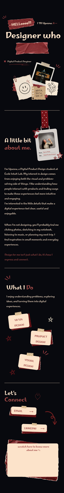
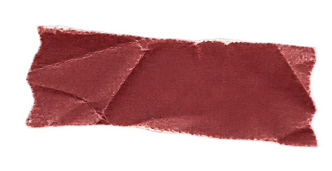

01
UI/UX DESIGN
I design flows and interfaces that feel simple, clear, and easy to use.


Solves HELLOooo!!!
HELLOooo!!!
I ‘M Upasna. A --


* Digital Product Designer
I’m Upasna, a Digital Product Design student at École Intuit Lab. My interest in design comes from enjoying both the visual and problem-solving side of things. I like understanding how people interact with products and finding ways to make those experiences feel more intuitive and engaging.
I’m interested in the little details that make a digital experience feel clear, useful and enjoyable.

When I’m not designing, you’ll probably find me clicking photos, sketching in my notebook, listening to music, or planning my next trip. I find inspiration in small moments and everyday experiences.
Design for me isn’t just what I do, it’s how I express and connect.
I enjoy understanding problems, exploring ideas, and turning them into digital experiences.
I design flows and interfaces that feel simple, clear, and easy to use.
I use typography, layout, and visual systems to give ideas a clear visual voice.
I connect research, structure, and visual craft to shape useful products.
scratch here to know more about me ✎